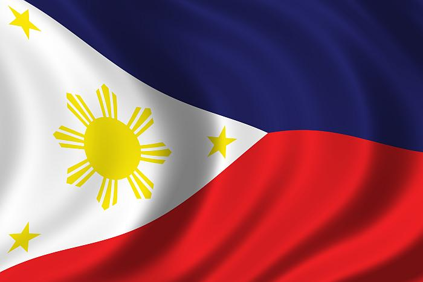

Philippines, island country of Southeast Asia in the western Pacific Ocean. It is an archipelago consisting of some 7,100 islands and islets lying about 500 miles (800 km) off the coast of Vietnam. Manila is the capital, but nearby Quezon City is the country’s most-populous city. Both are part of the National Capital Region (Metro Manila), located on Luzon, the largest island. The second largest island of the Philippines is Mindanao, in the southeast.
The Philippines takes its name from Philip II, who was king of Spain during the Spanish colonization of the islands in the 16th century. Because it was under Spanish rule for 333 years and under U.S. tutelage for a further 48 years, the Philippines has many cultural affinities with the West.
Puerto Princesa in Palawan is most famous for the Puerto Princesa Subterranean River National Park or the Underground River, a UNESCO World Heritage site and holds a place in the New7Wonders of Nature.
Mayon Volcano towers above the region, primarily in Legazpi City, and provides a breathtaking backdrop wherever you are in the province.
Legend has it that its name came from ‘magayon’, a Bicolano word that means beautiful which is more than appropriate to describe how stunning this natural scenery is from every angle
The majestic Chocolate Hills is one of the Philippines' most popular tourist attractions and is the top destination for Bohol tours. It got its name from its strange yet unique formation and rich vegetation that turns into chocolate brown during the dry months, hence, the name.